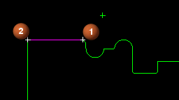
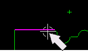
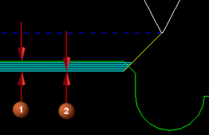
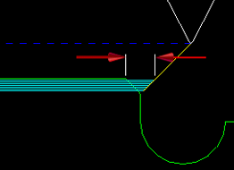
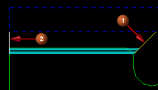

Thread the outside diameter
You will create an operation that threads the outside diameter.
-
Create a Thread OD operation.


In the Location group, set the options as shown.
Program = PROGRAM
Tool = UGTI0131_003
Geometry = AVOIDANCE_1
Method = LATHE_THREAD
-
You will define thread geometry to determine the area to be cut.
Define the thread geometry with the start point (1) and end point (2).

-
In the Thread OD dialog box, in the Thread Shape group, click Select Crest Line .
 .
.
-
Select the crest line at the right end as illustrated below. This establishes the Start point at the right end and the End point at the left end.

-
You will define the total cut depth and cut increment to determine the root line.
Define a total cut depth of 0.035 (1) and a cutting increment of 0.005 (2) using a tolerance of 0.001.

-
In the Depth Option list, select Depth and Angle.
-
In the Depth box, type 0.035.
-
In the Angle from XC box, Type 180.
-
In the Path Settings group, from the Cut Depth list, select Constant.
-
In the Depth box, type 0.005.
-
In the Cut Depth Tolerance box, type 0.001
-
You will offset the start point slightly to accommodate the chamfer.
Define a Start Offset of 0.050.

-
In the Thread Shape→Offset sub-group, in the Start Offset box, type 0.050.
-
You will specify the engage and retract settings for the cutting passes.
Specify an engage angle of 45 (1) and a retract angle of 90 (2).

-
In the Path Settings group, click Non Cutting Moves
 .
.
-
In the Non Cutting Moves dialog box, click the Engage tab.
-
From the Engage list, select Angle.
-
In the Angle box, type 45.
-
From the Move Type list, select Thread.
-
Click the Retract tab.
-
From the Retract list, select Angle.
-
In the Angle box, type 90.
-
From the Move Type list, select Thread.
-
Click OK to accept the Engage/Retract settings.
-
You will specify the number of finish and chase passes.
Specify 2 finish passes and 2 chase passes.
-
In the Path Settings group, click Cutting Parameters
 .
.
-
Click the Additional Passes tab.
-
In the Finish Passes group, in the Number of Passes box, type 2.
-
In the Chase (Spring) Passes group, in the Chase (Spring) Passes box, type 2.
-
Click OK to accept the finish and chase passes.
-
Generate the tool path using a 2D display.


-
Click OK to complete the operation.
|
NC_PROGRAM |
 PROGRAM
PROGRAM CENTERLINE_SPOTDRILL
CENTERLINE_SPOTDRILL CENTERLINE_BREAKCHIP
CENTERLINE_BREAKCHIP FACING
FACING GROOVE_ID
GROOVE_ID FINISH_BORE_ID
FINISH_BORE_ID